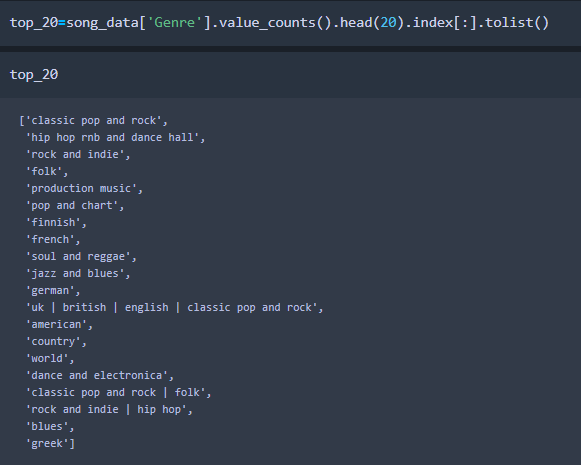
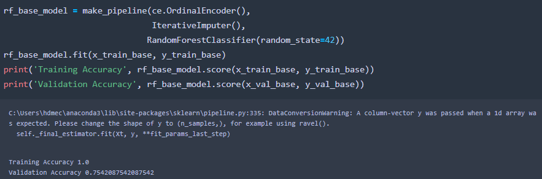
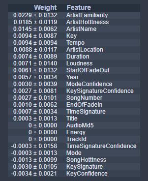
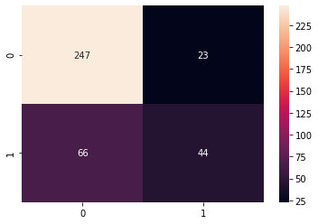

To Be, Or Not To Be In The Top 20?
The Random Forest Is Alive With The Sound Of Music
Be it the proudly stitched fabrics of conservative society or the more loosely patched together fabrics of the anarchist, music is believed by many to hold together the fabric of our society and inspire many facets of our everyday lives. Even as I write this blog post Nick Cave & the Bad Seeds Into My Arms concocts a serene ebb and flow of melodies to which I can focus my intention.
But whether you are the ever proud and boisterous listener of the latest Top 40 tracks or the too cool for school deep track hipster, one question plagues the everyday listener: are my favorite tunes in the top 20 genres?! Well, with the help of a few standard musical metrics (and a few less standard ones) I was able to take a good crack at this question.
A quick disclaimer before we depart on this musical journey, this model was built using a 10,000 song subset of the infamous Million Song Data Set from 2011, and through some thorough cleaning (including some scrubbing and trimming) that 10,000 song subset became about 2,000 songs in the end. Even so, the usually suspects made their way into the top 20! And if you happen to be a fan of Finnish hits, you'll be shockingly pleased to find these two genres make an understandably unexpected appearance:
Now, if we were to just throw our 10,000 songs into a logistic regression model, bare bones and unshaven, we'd get a baseline accuracy of about 72 percent. Not great and not terrible, and it's possibly the best we get with the information we have. Unfortunately, we don't live in a perfect world, clearly exemplified by the breaking up of the Talking Heads and the fact that we're missing a few features from the original dataset. This could heavily influence the accuracy of our model, at least the missing features could. However, we do have a few features that could create some leakage and be to blame for a 72 percent accuracy right off the bat, which also puts us in danger of significantly reducing this baseline. So, to be safe, I did a sort of sanity check by creating a second baseline model using the Random Forest Classifier. As this model is hyper sensitive to overfitting, it's a good tool to get an idea if leakage is Out of Control.
Low and behold, we have a 100 percent Training Accuracy, with a large separating it from our Validation Accuracy. So it is time to mix a bit of exploration with a bit of common sense. While there are many visuals that can help us in this situation, my main go to was eli5 permutation importance chart. This not only shows us which features have no impact on the model whatsoever and can be thrown away, but it also gives us a good idea of which features are heavily weighted and thus impact the model positively. While having a higher impact on our model is not necessarily a bad thing, and these impacts can give us better clues into what features to keep and engineer, we can also use some common knowledge to better inform the decision of which features to exclude.
After a rumble, a tumble, and a couple of fumbles, we've finally got our dataset nice and clean and ready to be passed through a final predictive model. I decided to run my data through a Random Forest model once again after the cleaning to see if I could beat the original baseline with a bit of hyperparameter tuning. And voila! I've managed to push that accuracy score to 76 percent! We're not reinventing the wheel hear or setting any records, but for a pretty basic model with some missing features I think we've made decent headway. That being said, I also wanted to give Gradient Boosting a go, as it makes somewhat better use of bagging than Random Forest in some cases. With the Gradient Boosting Classifier I was actually able to push my accuracy a bit further to about 78 percent. With what I've got at the moment, this is probably the best it's going to get and it's certainly nothing to scoff at! We have some decent metrics and for simply these to so accurately decipher whether or not a song falls into the top 20 genres of the subset is fairly impressive. Our accuracy suffers a bit when fitting our model to the test data but not by much and still giving us an output of 76 percent accuracy. While I don't exactly think Grimes made it into the top 20 (take that as you will), our confusion matrix shows us that in fact most songs seem not to, as much fewer songs end up being predicted as existing in the top 20 genres.
The model may not be perfect, but neither is all music. In the end, however, it is still (arguably) music just as our model is still doing far better than worse. So for now, in the immortal words of the best song on the 2nd most underwhelming Metallica album, Nothing Else Matter.
To Check Out This Notebook click here!